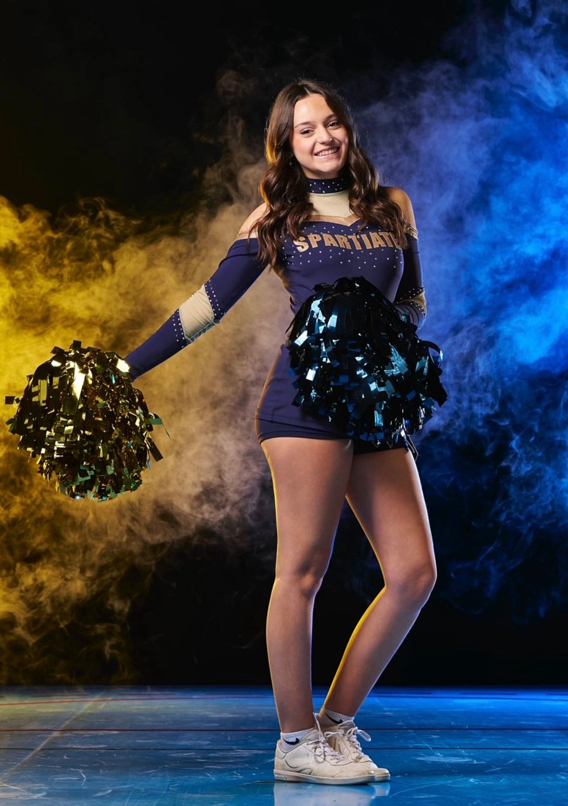

Minimes
Les premiers pas : découvrir les bases, les sauts et le plaisir de pratiquer en équipe.

Un sport athlétique et spectaculaire, qui développe le corps comme le mental.
Acrobaties, gymnastique et danse : trois univers réunis, sans avoir à choisir.
Sport d’équipe avant tout, il crée des liens solides entre les athlètes.
Pour que chacun soit en sécurité, il faut se faire confiance et appliquer les règles avec rigueur.
Se produire devant un public et en compétition apprend à se concentrer et à gérer son stress.
Le cheerleading n’impose pas de contre-indication d’âge ou de niveau. Une bonne condition physique et un peu de souplesse sont un plus, et le reste s’apprend à l’entraînement.
Les premiers pas : découvrir les bases, les sauts et le plaisir de pratiquer en équipe.
On progresse sur les portés, le tumbling et la chorégraphie.
Des routines plus techniques et l’esprit de compétition.
L’équipe senior porte haut les couleurs du club en compétition.
Les séances ont lieu au Stade du Grand Marais, ainsi qu’au complexe sportif Dupontreue et dans plusieurs équipements d’Étouvie, selon les catégories.
Pas de tenue imposée à l’entraînement : on choisit des vêtements près du corps, qui ne gênent pas les figures, et des baskets d’intérieur souples, avec un bon maintien. L’uniforme est de rigueur en compétition. [Modalités de l’uniforme à confirmer]